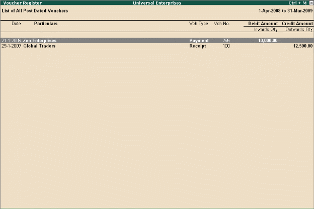

post dated voucher
To enter a Post dated Voucher,
To view Post dated vouchers, Tally.ERP 9 provides the capability to enter vouchers in advance for future transactions that are definite in nature. The vouchers marked as Post dated does
not affect the books of accounts till the date specified in the voucher. This facility is extremely useful when the user has issued or received post-dated cheques and does not need to modify the voucher to reflect the transaction on a particular date.
Go to Gateway of Tally >Accounting Vouchers > select F5: Payment
# Click Ctrl + T (Post Dated)
# Complete the transaction and save
Go to Gateway of Tally >Display > Exception Reports > Post-Dated Vouchers
# Select a month or Click F2: Period to specify a date range for viewing the report for different periods.
